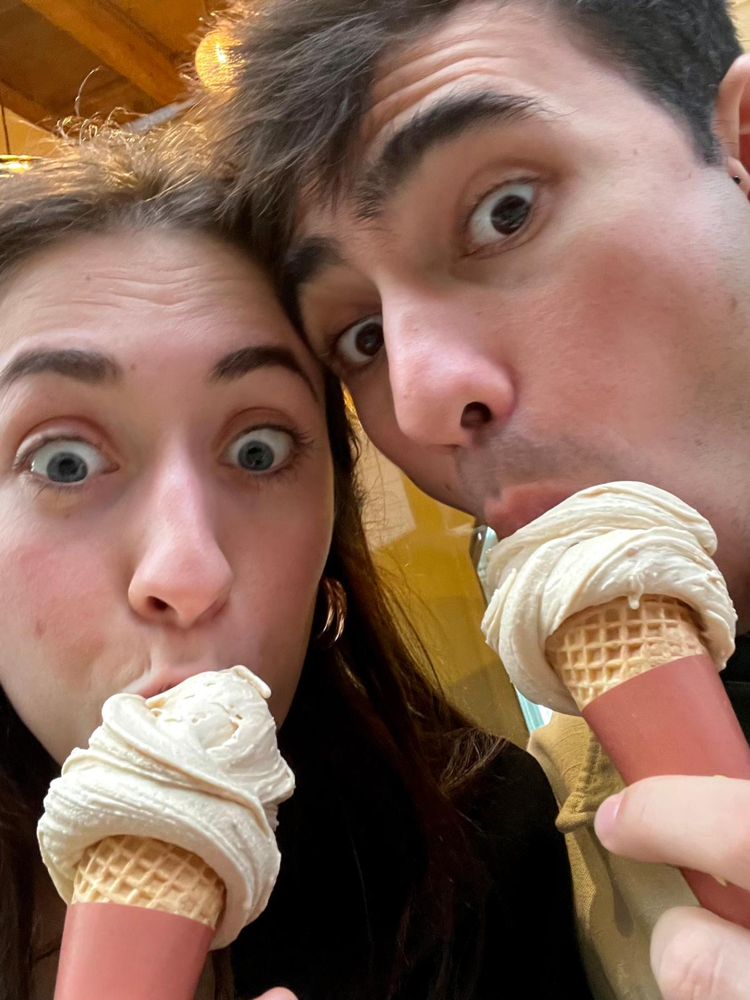
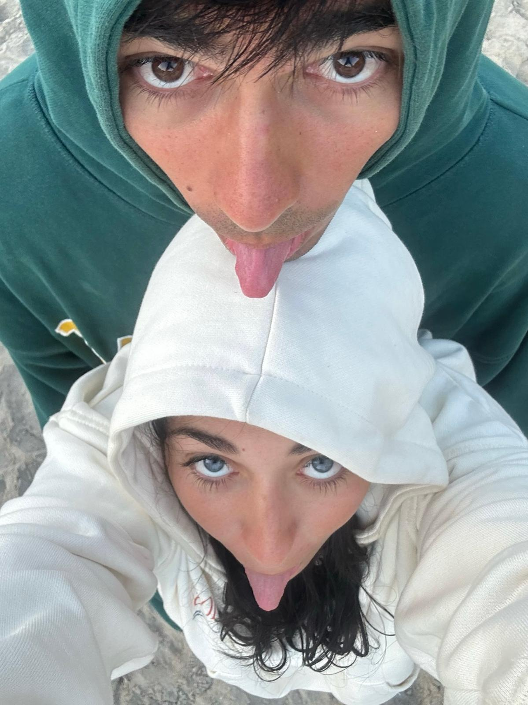
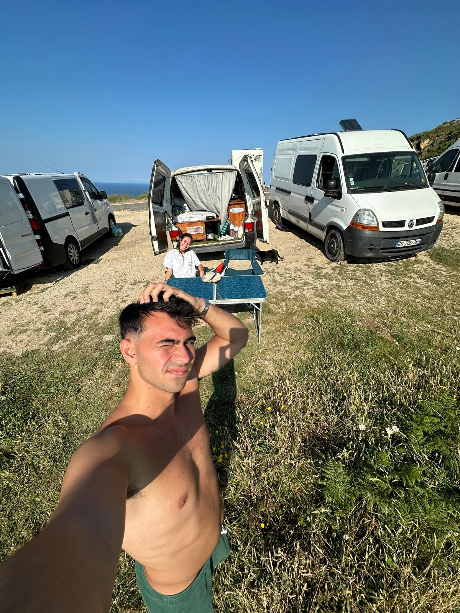
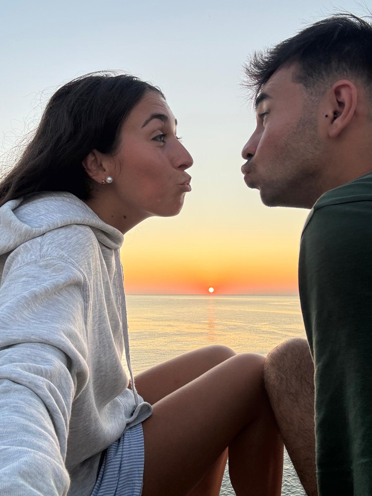
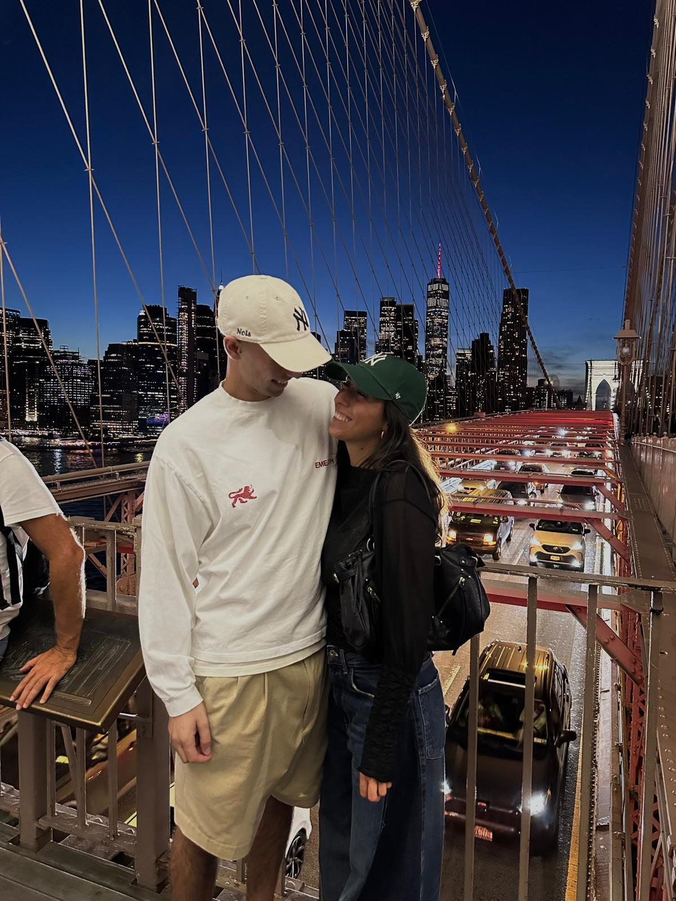
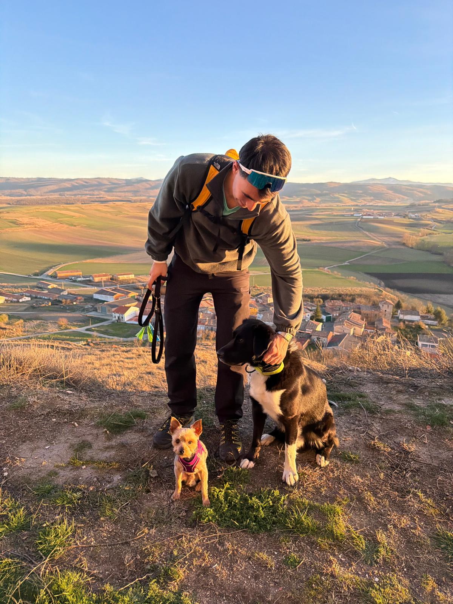

Desbloqueo programado para el 6 de noviembre a las 00:00 (hora de Ridgewood, NY). Ni un minuto antes.
00días
00horas
00min
00seg
5años juntos
15 sepúltimo reencuentro
23 dicpróxima parada
acceso concedido
Feliz cumpleaños, Mariete.
Antes de seguir, aunque ya te he felicitado en esa carta, quería ponerte una felicitación cortita:
Felices 24 a la persona con la que quiero seguir compartiendo todos los años que nos queden por delante.
Ahora sí, después de esta cosita pequeña. Vamos a echar la vista atrás de nuestra historia y recordar un poquito todo lo que hemos vivido para llegar hasta aquí.
Nuestra historia cinco años
Bilbao
Cómo empezó todo
🎵 Una canción que siempre me recordará a ti y que describía lo nuestro a la perfección
🎧 Escúchalo, si prefieres que te lo lea
Todo empezó en Bilbao. Quién nos diría cuando nos conocimos que hoy estaríamos aquí...
Aunque en realidad no empezó el día que nos vimos por primera vez. Éramos amigos y, aunque tú pensases que me caías mal, la verdad es que simplemente te veía como un chico muy serio. Pero me lo pasaba increíble de fiesta contigo y siempre pensé que tienes la sonrisa más bonita del mundo; esa misma sonrisa que a día de hoy quiero a mi lado todos los días de mi vida.
Pasamos de amigos a algo más en una sola noche. En un baile... bueno, en unos cuantos bailes. Y si me preguntas, fueron las mejores noches de mi vida. Me encantaba buscar el momento exacto para quedarnos solos, poner música, sentirte cerca y pensar que no existía nada más en el mundo que importara más que ese instante.
Doy gracias a dios cada día por haber salido justo esa noche, en ese momento. Y te lo repetiré siempre que lo necesites: ese primer polvo y esa primera ducha fueron mi "sí, quiero estar con este chico". Sé que para ti en ese momento fue algo normal, pero para mí fue el principio de todo.
Y después de esto... toca recorrer un poco nuestros años juntos.
2021
Primer año

🎧 Escúchalo, si prefieres que te lo lea
El primer año fue intenso; intensísimo a nivel de sentimientos por mi parte.
Te metiste en mi cabeza, en mi corazón y en todo mi ser. No sabía cómo gestionar todo lo que estaba sintiendo... en realidad, no sabía gestionar absolutamente nada. Venía de otras relaciones donde había sufrido mucho y donde había normalizado cosas que tú me enseñaste (y me sigues enseñando a día de hoy) que no lo eran.
Gracias a nuestra paciencia, a nuestras discusiones, a las tardes eternas hablando, a nuestras cenas, a nuestros polvos, a nuestras risas y, al fin y al cabo, a toda esa intensidad, hoy estamos donde estamos. Por eso no cambiaría nada: ni una sola discusión, ni un solo tropiezo.
Todo el mundo dice que los primeros años son los más fáciles y bonitos, pero en nuestro caso no sé si estoy muy de acuerdo: fue precioso, pero también muy duro y triste por momentos. Aun así, cada vez que estaba contigo tenía algo clarísimo: una vez metida en este jaleo ya no había marcha atrás. No había forma humana de sacarte de mi vida.
Y gracias por las cartas que me escribiste. El confinamiento fue tan impactante y único para ti como para mí; no nos hacía falta nada más que tú y yo. Encerrados en apenas diez metros cuadrados éramos completamente felices: no existían discusiones, no existía el mundo exterior, no existía nada más.
2022
Segundo año

🎧 Escúchalo, si prefieres que te lo lea
Y llegó el segundo año. Un año de cambios, de poner nombres a las cosas y formalizar lo nuestro, pero también podría decir que, para mí, el año más duro de todos los que llevamos.
Un año en el que a los dos nos tocó tragar mucho. Un año en el que mis inseguridades pudieron más que cualquier otra cosa, pero también el año en el que no dejé de confirmar que te quería para siempre en mi vida: que cuando estaba contigo, el resto del mundo desaparecía. Solo quería que me mirases a mí, que pensases en mí y que sintieses que no querías estar en ningún otro lugar del planeta que no fuese ahí conmigo.
Fue difícil, pero nos sirvió para luchar y seguir adelante juntos, para aprender y para querernos cada día un poco más y mejor.
Sé que quizás no sea la mejor foto, pero cada una de las imágenes que he elegido para este viaje es tan puramente nosotros que era imposible poner otra. Gracias, un año más, por demostrarme que no me equivocaba al elegir al amor de mi vida.
2023
Tercer año

🎧 Escúchalo, si prefieres que te lo lea
Y llegó el tercer año. Un Erasmus de por medio y ese miedo frío recorriéndome el cuerpo de si seríamos capaces de superarlo... Pero lo fuimos, y con creces.
Demostramos ser dos personas maduras, que se quieren de verdad, que saben comunicarse y que tienen clarísimo que son el uno para el otro; que nadie puede interponerse en medio porque, sencillamente, no existe nadie más.
Conocer a más gente fuera solo me sirvió para confirmar la suerte inmensa que tengo de tenerte a mi lado. Eres la persona más maravillosa que conozco: bueno, dulce, cariñoso, maduro... Y lo reafirmo cada vez que veo lo muchísimo que te quiere todo el mundo. Ojalá el mundo entero pudiese tener a alguien como tú; yo ya te tengo a ti, y no pienso soltarte.
2024
Cuarto año

🎧 Escúchalo, si prefieres que te lo lea
Y ya vamos por el cuarto año, cuando nadie daba un duro por nosotros. Un año en el que pasé una gran parte viviendo en nuestra ciudad... y digo nuestra porque Donosti ya es un poquito mía también.
Me has hecho sentir siempre en casa; me has hecho parte de tus amigos, de tu familia... Y es que no puedo tener más suerte de sentirme tan querida allá donde me lleves. Gracias por quererme, por apoyarme, por levantarme cada vez que me caigo y, sobre todo, por poner tu pechito todas las noches al ir a dormir, porque fue un año duro de pechito, eh jajajaja.
Estoy deseando que llegue ese día en el que pueda despertarme a tu lado todas las mañanas, ir a trabajar, cenar juntos y dormir en nuestra casita, con nuestros planes. Fui tan feliz esos seis meses en Donosti que tengo clarísimo que podría serlo toda mi vida a tu lado. Tú eres para mí y yo soy para ti.
2025
Quinto año

🎧 Escúchalo, si prefieres que te lo lea
Empezamos viviendo en Bilbao, venías muchísimo a verme, a pasar tiempo conmigo, a hacerme la cena y a cuidar de mí con esa infinidad de detalles que tienes siempre. Es que lo mío contigo es pura suerte.
Pero luego llegó el momento de decidir echar a la Global Training. Y aunque siempre te he apoyado y siempre lo haré, no te voy a negar que una parte de mí deseaba que no te fueses: no sabía si podía permitirme tenerte tan lejos, sentirte a tantos kilómetros cuando lo único que quería era tenerte pegado a mí. Pero habría sido muy egoísta por mi parte retenerte; siempre voy a querer lo mejor para ti. Sabía que esto solo sería una etapa, una temporada que nos haría aún más fuertes como pareja y en la que tú crecerías como persona, como profesional y en todo. Siempre pensé, y sigo pensando, que Nueva York tiene muchísima suerte de tenerte.
Estos meses han sido duros y te he echado de menos como a nadie, pero te juro que todo este esfuerzo mereció la pena solo por esos 15 días que pasé a tu lado en septiembre. Fueron los mejores quince días de mi vida en mucho tiempo: fui inmensamente feliz, me reí como nunca y me sentí querida como hacía tiempo que no me sentía.
Merece la pena porque te veo feliz, te veo bien y estoy profundamente orgullosa de la persona en la que te has convertido en estos cinco años. Te he visto crecer y creo que nunca dejaré de asombrarme de lo increíble que eres. Pero es que, además, estoy muy orgullosa de la persona en la que tú me has convertido a mí: soy mejor persona, pero sobre todo mejor novia, y te juro que no puedo más que darte las gracias. Somos una pareja increíble, Mario, y estoy tan orgullosa de dónde hemos llegado... Todo el mundo debería tener una relación como la nuestra; nunca pensé que llegaríamos hasta aquí, pero es que lo que tenemos es absolutamente increíble. Estoy tan orgullosa de ti, te lo juro, Mario.
Todavía nos queda una temporadita lejos y sé que se hace dura porque la vuelta para mí fue horrible, pero todo sea por una vida entera juntos. Porque quiero que un día les cuentes a nuestros hijos todo lo que viviste e hiciste en Nueva York, para que ellos también sepan que pueden llegar a ser tan increíbles como su papi. Esto solo es el principio de toda una vida junto a ti.
Familia
Parte de la familia

🎧 Escúchalo, si prefieres que te lo lea
Por último, quería poner esta foto porque para mí tiene muchísima importancia.
Que quieras a mis perritos tanto como yo y que tengas tan claro que son uno más de mi familia, y que los quieras y los cuides como tal, es algo que para mí significa muchísimo. Puede parecer una tontería, pero para mí dice muchísimo de ti como persona. Porque quererme a mí también es querer las cosas y las personas que forman parte de mi vida, y tú lo haces de una manera tan natural que no puedo estar más agradecida.
Y es que, por décima vez en este viaje, no puedo hacer otra cosa que decirte lo maravilloso que eres, Mario. No solo eres el amor de mi vida, eres también una persona que se ha convertido en parte de mi familia y que, por supuesto, lo será siempre.
Así que felices 24 a una de las personas más importantes de mi vida. Ojalá podamos seguir sumando años, recuerdos, viajes, casas, cenas, discusiones, risas y, por supuesto, muchos perritos más juntos.
PD: Rocky te quiere más que a nada en el mundo. Y eso, viniendo de Rocky, es siempre una señal bastante buena. 🐶❤️
Tu familia vídeo
Sé que este día va a ser duro lejos de la gente que quieres y ojalá poder estar ahí, pero he intentado que te sientas un poco más en casa.
Tus amigos audio
Y por supuesto no podía dejar fuera a una pequeña parte de ti a la que estoy segura de que echas mucho de menos. Conecta los auriculares: